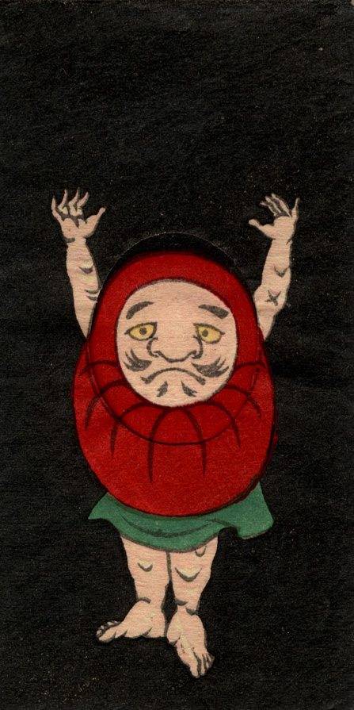

← 图鉴索引

赤いだるまに手足が生えている。直立し、両腕を挙げている。
出典：親書誌：U426_nichibunken_0239：しん板かはりうつしゑ；シンパンカワリウツシエ／日付：2010／資源識別子：U426_nichibunken_0239_0001_0000
Copyright (c)2010- International Research Center for Japanese Studies, Kyoto, Japan. All rights reserved.